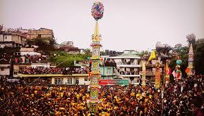

Festivals and Ceremonies of the "Jaintias"
Behdeinkhlam

"Behdeinkhlam is the most important festival in the socio-economic life of the Jaintias. The
focus is
on praying for prosperity and good health for the people, as well as invoking divine blessings for a
bountiful harvest.
This festival is celebrated all over the Jaintia district, but the grand spectacle takes place at
Jowai, the
district headquarters, situated at an altitude of 1220 meters above sea level and 64 km from
Shillong by
road. The festival is observed by non-Christian 'Pnars' who follow the traditional faith of
"Niamtre".
According to legend, Jowai town is central to the festival's origins."
The Festival
A week before the festival begins, a pig is sacrificed to "Thunder" (Knia Pyrthat). The "Wasan" or
priests
ring "Chew Chew," a brass bell, along the main road of the town until they reach the forest.
The main feature of the festival is the making of the "Dein Khlam," "Symlend," and "Khnong," which
are
rounded, polished, tall tree trunks felled in a preserved forest. Pine trees are never used. After
lying in
the woods for a couple of nights, the trunks are brought to town with great fanfare—drums and pipes
play,
and there is much dancing and yelling. These trunks are later erected in each locality and even in
front of
individual homes.
On the fourth day, young men led by priests carry bamboo sticks and visit each home, where the roof
is
beaten to chase away evil spirits, accompanied by drums, cymbals, and chanting in Pnar. The "Khnong"
is
pulled down, broken, and discarded. The group is offered home-brewed rice beer by the lady of the
house.
Youth from each locality also showcase their artistic skills by erecting colorful "rots"—30 to
40-foot tall
structures built of bamboo, colored paper, and tinsel. Each group competes to outdo the other in
creating
the tallest and most artistic rot.
In the afternoon of the fourth day, the "rots" are carried in procession towards the "aitnar" site.
The
river is dammed, and a low brick wall forms a kind of amphitheater. Spectators arrive, with women
gorgeously
dressed in colorful silk "Usens" and adorned with gold ornaments. Colorful umbrellas open, adding to
the
vibrancy if it starts to drizzle. After the "rots" arrive, the polished, rounded logs are thrown
into the
river, where men and boys rush toward them to balance on the slippery logs. This is accompanied by a
lot of
playful frolicking.
At the end of the festival, football games are played with a wooden ball."
The "Laho" Dance

"The 'Laho' dance is a festival devoted to entertainment, where both men and women participate
in colorful
attire, always dressed in their vibrant best.
Typically, two young men stand on either side of a girl, linking arms as they dance in step. Instead
of the
usual drum and pipe, a 'cheer leader,' a man with a gift for rhythmic recitation, chants playful and
sometimes
ribald couplets. The humorous verses elicit waves of laughter from the spectators, adding to the
festive
atmosphere."
Sowing Ritual Ceremony
Beh Ser Soopen
This is a religious hunting ritual where a priest breaks an egg to bring success and determine the divine part of the forest where the hunters must go. At the end of the chase, the "quarry" is carried to the altar, and the meat is distributed among all participants.
Cher Iung Blai
In this ritual, men construct a small thatch made of bamboo and grass, symbolizing a place where evil spirits are trapped. The male participants then use spears to symbolically kill the demons, representing the triumph over evil forces.